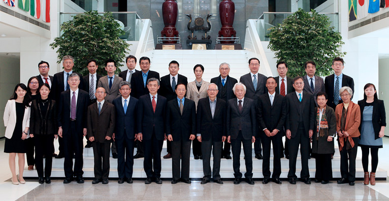

- Related articles
- Comparison between the urbanization policy
- Modern government and public governance BBS series1：Management innovation of National People's Congress
- CIDEG major projects "tracking the international supply chain of China's carbon emissions" launching ceremony
- CIDEG major projects "tracking the international supply chain in China
- CIDEG 13th academic annual meeting
- Comparison between the urbanization policy
- Series of modern government and public governance BBS 1: governance innovation of National People's Congress
- CIDEG major projects "tracking the international supply chain of China's carbon emissions" launching ceremony
Comparison between the urbanization policyRelease time： 2014-08-29 11:31:08
Tsinghua university research center of industrial development and environmental control (CIDEG) at the symposium on "urbanization policy comparison between China and Japan on July 14, 2014 successfully held in room 302 in public management school in the afternoon. Hokkaido university professor emeritus of the ze Ming made about "Tokyo city circle development experience and enlightenment" special report, CIDEG directors to Mr Presided over the conference. At the university of California, San Diego, professor, school of international relations and Pacific studies CIDEG academic member Barry Naughton, development strategy of the state council and the regional economic research, ms researcher shan-tong li, professor of Peking University institute of urban environment Lv Bin, the journal is executive editor of ms su-ping wu, director of tsinghua university, dean of the school of public administration, CIDEG xue, a professor at the school of public management, tsinghua university, associate professor, deputy director of the CIDEG ms Chen ling and representatives from Toyota motor corp., attended the meeting. In addition, from the school of public management in a number of doctoral students also attended the seminar.
The professor ze Ming first introduced China's urbanization and the development history of Japan's urbanization and stage. China's urbanization process is mainly divided into four stages. After the first stage of the founding of the first five-year plan period, under the background of the socialist planned economy started to develop heavy industry and urbanization, as public property. The second phase of the 1960 s to the 1970 s, China in this period by the household registration system management inhibit the development of urbanization, housing level is low and even worse. After the third stage of reform and opening up, the development of market economy makes the housing commercialization, land rights can buy and sell, farmland dedicated and city blocks in the expansion. The fourth stage is the 21st century, to actively promote the urbanization, the development of urban agglomeration, and the problem is that the hukou system reform. By contrast, Japan's urbanization began in 1910 to 1930, main show is the increase in population in six major cities, urban expansion. From the 1923 Tokyo earthquake in 1930 to seven years in Renaissance period of Japan's urbanization experience. The second phase of the 10 years from 1945 to 1955, the postwar economic Renaissance makes three big city circle (Tokyo, Osaka and Nagoya) tendency of agglomeration, especially the expansion of Tokyo circle far beyond the government's expectations. Third stage from 1950 to 1950, the Japanese government is preparing a plan for Tokyo, the capital circle, considering the city planning and all kinds of problems of urbanization in Japan, to promote urban infrastructure construction and improve. The period of the landmark event for the 1964 Tokyo Olympics and the 1964 world expo in Osaka, it promoted the development of urbanization in Japan.
Next, the ze Ming, a professor at the Tokyo after 1945 the construction of the policy change has carried on the system is introduced. Japan in 1950 and 1950, respectively, issued the act of capital construction, the development in the capital circle law specifically for such as Tokyo and the surrounding counties of urbanization construction policy. These policies on the environmental problems of urbanization, traffic construction and commuter question has carried on the overall planning. The capital development act is performed by the prime minister's office as a department, operating on the basis of commission and coordination, and distinguish between the policy and coordinate departments responsibility. The capital development law of three times before the plan is be determined by the board in a way that every ten years, until the fourth committee system abolished after plan. In the capital circle development act, the government system of concentrated research and planning for the residential community, industrial park construction, highway planning and green space ancient capital protection issues. From 1968 years later, the urban planning laws made a comprehensive revision. After this residential community, private developers residential center, and the concept of residential construction from quantitative to quality, began to explore the old houses and parenting is appropriate housing. At present, the government of Japan is Tokyo city circle began to explore some new problems, such as how to connect to the outskirts of residential and commuter rail, electricity station and subway station how to connect, how to prevent enterprise production cause of air pollution, soil pollution problems such as how to purify the linhai factory.
In question and answer and discussion section, the scholars between the two countries in solving the problem of urban agglomeration benefits under the environment, whether to need to production away from urban or industrial enterprises reconsider city function orientation, how to use tax tool to alleviate urban agglomeration effect, and the government how to deal with the city dump site in adjacent avoidance phenomenon, how to deal with the city of excessive concentration of other social question has carried on the deep discussion and communication.

Tsinghua university, dean of the school of public management, professor xue director CIDEG spoke at the meeting